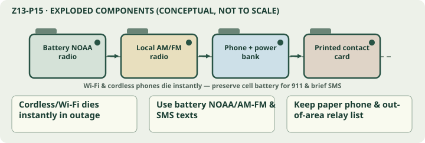

Z13-P15 · Home survival and utilities · New manuscript
Maintain home communications and cordless-phone backups during blackouts
Keep 911 dialing, local warnings, and family coordination working when home Wi-Fi, VoIP, and cordless phone bases go dead.
When it applies · Residential blackouts disrupting internet modems, cable phones, and regional cell towers.
Equipment · Battery/crank NOAA Weather Radio, AM/FM radio, charged cell phone + power bank, corded analog phone (if true copper line exists), and printed contact card.

Actions
- Remember that Wi-Fi routers, VoIP modems, and AC-powered cordless home telephone bases die IMMEDIATELY when house electricity fails—keep cell phones in low-power mode and use short SMS text messages rather than voice calls when towers congest.[U16, T11, D13]
- Power a battery or hand-crank NOAA Weather Radio and local AM/FM radio to receive continuous NWS warnings, utility restoration briefings, and county shelter announcements independent of cellular and internet infrastructure.[U16, T15]
- Keep a printed paper card with local sheriff/dispatch non-emergency numbers, utility hotlines, medical contacts, and an out-of-area family relay contact taped inside the outage kit.[U16, T11]
Failure recognition · Relying on a cordless landline handset and cloud-only phone numbers during an ice-storm blackout when both home power and cell data collapse.[U16, T11]
Verify · Confirm NOAA/AM-FM radio receives local stations cleanly with fresh batteries, phones stay charged, and paper contact cards are current.[U16, T15]
Stop or change course · Inability to receive severe-weather alerts or reach 911 for a medically fragile occupant triggers early relocation to an area with verified service.[U16, U17]
Evidence and editorial notes
- D13 · FEMA / Ready.gov · Make a Plan (current web edition)
- Section: Communications Outages, SMS Priority, and Out-of-Area Rally Contacts · Conditions: Regional cellular congestion, tower power loss, or internet blackouts
Support: Use short SMS text messages instead of voice calls when cell networks congest, designate an out-of-area contact person to relay family status, establish fixed physical household meeting locations (neighborhood and out-of-town), and monitor battery NOAA/AM-FM radio for official updates.
Limitations: Emergency 911 text availability varies by county; confirm local PSAP capability in advance and keep voice dialing primary where reachable. · Conflicting evidence: None; builds on T11 and U16.
Editorial note: Grounds communications-failure fallback and group accountability cards. · Specialist reviewer: Emergency communications and emergency management
Primary source · checked 2026-11-24 - T11 · FEMA / Ready.gov · Make a Plan (current web edition)
- Section: Make a Plan > Family Emergency Communication Plan · Conditions: Households and traveling groups preparing for disruptions
Support: Record out-of-area contacts, local meeting places, medical/allergy summaries, and alternate communication channels (text vs voice) in paper and offline formats; practice the plan periodically.
Limitations: Cellular networks often congest during disasters while SMS or out-of-area contacts may still connect. · Conflicting evidence: None; complements outdoor trip-plan cards.
Editorial note: Anchors emergency communication protocols and group contingency plans. · Specialist reviewer: Emergency management and communications
Primary source · checked 2026-11-24 - T15 · NOAA NWS · NOAA Weather Radio All Hazards (current web edition)
- Section: NOAA Weather Radio All Hazards > Coverage and Receivers · Conditions: Weather and civil-hazard monitoring across the United States
Support: NOAA Weather Radio broadcasts continuous official warnings directly from NWS offices on VHF frequencies; battery or hand-crank receivers with SAME alerting operate independently of cellular networks.
Limitations: VHF line-of-sight range can be attenuated in deep valleys or dense metal structures; verify local transmitter reception before relying on it. · Conflicting evidence: None; aligns with READY-ALERTS.
Editorial note: Documents offline weather-alert radio capabilities and reception limits. · Specialist reviewer: Meteorology and emergency communications
Primary source · checked 2026-11-24 - U16 · FEMA / Ready.gov · Emergency Alerts (current web edition)
- Section: Household Emergency Communications During Grid and Cell Outages · Conditions: Residential power, internet, and cellular tower disruptions
Support: Maintain a battery/crank NOAA Weather Radio, spare power banks, car-charger backups, written contact cards, and local AM/FM broadcast station lists so warnings and utility restoration updates remain accessible without Wi-Fi or cell data.
Limitations: Cordless landline handsets and VoIP routers fail immediately when house power drops unless separately backed up. · Conflicting evidence: None; links Z13 household comms to Z15 disaster alerts.
Editorial note: Grounds home communications continuity during extended blackouts. · Specialist reviewer: Emergency communications specialist
Primary source · checked 2026-11-24 - U17 · FEMA / Ready.gov · Evacuation (current web edition)
- Section: Household Evacuation Thresholds When Utilities Fail · Conditions: Uninhabitable indoor temperatures, sewage backup, persistent CO alarm, or structural/utility hazard
Support: Establish clear pre-agreed exit triggers to relocate to a warming center, hotel, or relatives BEFORE indoor freezing, carbon monoxide alarms, medical-device battery exhaustion, or impassable blizzard roads trap occupants.
Limitations: Waiting until indoor pipes burst or batteries hit zero removes safe travel options. · Conflicting evidence: None; aligns with T13 and E14.
Editorial note: Defines objective household abandonment thresholds in Z13. · Specialist reviewer: Emergency management and cold-weather operations
Primary source · checked 2026-11-24
Source lineage · FEMA Ready.gov Emergency Alerts and Power Outages; new manuscript · Classification · New manuscript.